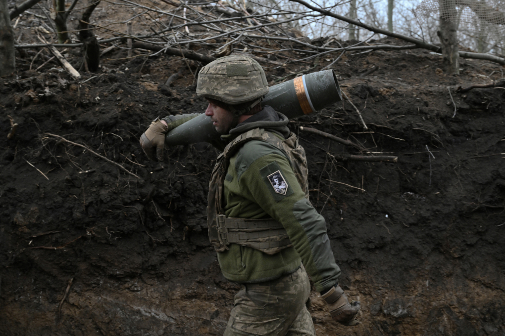

Nga lạc quan thận trọng về cú đảo ngược chính sách của Mỹ
Thứ 6, 21/2/2025
Ông Trump đã đảo ngược cách tiếp cận của Mỹ với Nga và xung đột Ukraine, nhưng người Nga cho rằng cần bình tĩnh xem xét những gì sắp tới.
Sau ba năm Mỹ cùng đồng minh nỗ lực thiết lập liên minh ủng hộ Ukraine và cô lập Nga, chính sách của Nhà Trắng đã thay đổi nhanh chóng trong những ngày qua. Giới chức Nga hoan nghênh động thái của Mỹ, nhưng chính họ dường như cũng bất ngờ trước tốc độ thay đổi.
Phái đoàn cấp cao của Nga và Mỹ ngày 18/2 gặp nhau tại Arab Saudi để thảo luận về chấm dứt xung đột Ukraine, cũng như tái thiết quan hệ giữa Washington và Moskva. Cuộc họp diễn ra chỉ vài ngày sau khi Tổng thống Donald Trump điện đàm với người đồng cấp Nga Vladimir Putin, động thái mà nhiều chuyên gia nhận xét đã phá vỡ thế bị cô lập của Moskva.
Mối quan hệ giữa Nga và Mỹ có những dấu hiệu cải thiện sau đó, khi hai bên có những bình luận tích cực về những diễn biến mới. Dù không thông báo cụ thể về thời điểm diễn ra cuộc họp thượng đỉnh giữa ông Trump và ông Putin, ông chủ Nhà Trắng cho biết sự kiện có thể diễn ra sớm nhất trong tháng này.
Ông Putin ngày 19/2 xác nhận cuộc họp thượng đỉnh có thể diễn ra nhanh, nhưng cũng nhấn mạnh cần có sự chuẩn bị.
"Chúng tôi đang trong tình huống mà những cuộc gặp chỉ để uống trà hay cà phê, ngồi xuống trò chuyện vui vẻ về tương lai là không đủ. Chúng tôi cần đảm bảo các nhóm của mình chuẩn bị kỹ càng cho những vấn đề rất quan trọng đối với cả Mỹ và Nga", ông nói.

Tổng thống Nga Vladimir Putin (trái) và Tổng thống Mỹ Donald Trump tại cuộc gặp ở thượng đỉnh G20 tại Osaka, Nhật Bản tháng 6/2019.
Ảnh: AFP
Người phát ngôn Điện Kremlin Dmitry Peskov cũng có bình luận tương tự. "Vẫn còn rất nhiều điều phải làm phía trước sau khi bước lớn đầu tiên đã được thực hiện. Vẫn còn quá sớm để đưa ra kết luận từ những gì đã xảy ra, nhưng có thể nói động lực hiện tại rất tốt và cách tiếp cận đang mang tính xây dựng", ông nói.
Trong khi đó, mối quan hệ giữa Mỹ và Ukraine lao dốc. Cuộc khẩu chiến giữa ông Trump và Tổng thống Ukraine Volodymyr Zelensky ngày càng leo thang.
Sau khi ông Trump điện đàm với ông Putin và thúc đẩy đàm phán về xung đột Ukraine, Tổng thống Zelensky nói bất kỳ cuộc đàm phán nào về tương lai Ukraine mà thiếu Kiev đều không thành công.
Khi bình luận về cuộc họp cấp cao Nga - Mỹ ngày 18/2, ông chủ Nhà Trắng đổ lỗi cho Ukraine "bắt đầu cuộc chiến" và cho rằng nước này nên tiến hành bầu cử tổng thống sau khi nhiệm kỳ của ông Zelensky đã hết thời hạn năm 2024. Cả hai bình luận đều lặp lại quan điểm của Nga.
Nga luôn khẳng định chiến dịch của họ ở Ukraine là nhằm bảo vệ lợi ích an ninh đất nước, trong bối cảnh xu hướng đông tiến của NATO và mong muốn gia nhập liên minh của Kiev đặt ra cho Moskva nhiều lo ngại. Gần đây hơn, Điện Kremlin cũng tuyên bố rằng ông Zelensky không phải tổng thống hợp pháp khi Ukraine hoãn bầu cử vì thiết quân luật.
Thực tế, hiến pháp Ukraine không yêu cầu bầu cử trong thời chiến. "Chúng tôi đã thấy những thông tin sai lệch. Chúng tôi hiểu nó đến từ Nga", ông Zelensky nói về tuyên bố của ông Trump. Lãnh đạo Ukraine thêm rằng Tổng thống Mỹ đã giúp Nga "thoát khỏi nhiều năm bị cô lập".
Một ngày sau, ông Trump phản pháo với những lời lẽ gay gắt hơn. Ông gọi Tổng thống Zelensky là "kẻ độc tài không được bầu", cáo buộc lãnh đạo Ukraine thuyết phục Mỹ chi hàng tỷ USD hỗ trợ cuộc chiến mà họ không thể thắng, đồng thời tiếp tục chỉ trích ông Zelensky hoãn bầu cử.
Dmitry Medvedev, phó chủ tịch Hội đồng An ninh Nga, cho biết ông rất ngạc nhiên khi ông Trump mô tả Tổng thống Ukraine là "độc tài". "Nếu ba tháng trước, bạn nói với tôi đây là bình luận của một tổng thống Mỹ, tôi chắc sẽ cười lớn", ông viết trong bài đăng mạng xã hội.
Báo Nga Kommersant đưa tin về những diễn biến này với các dòng tít như "Ukraine đã biến mất khỏi bức tranh". Người dẫn chương trình Vladimir Solovyov viết trên Telegram rằng các mối liên hệ giữa Nga và Mỹ đồng nghĩa là Ukraine đã thua. "Trò chơi đã kết thúc. Sòng bạc sắp đóng cửa. Đã đến lúc trả hết nợ hoặc tự bắn mình. Không còn lựa chọn nào khác ở đây", ông viết.
"Những gì đã xảy ra từ cuộc họp cấp cao, thái độ sẵn sàng thảo luận cải thiện quan hệ của Mỹ, ảnh hưởng của động thái này với liên minh xuyên Đại Tây Dương, đều khiến ông Putin thấy thích thú", Alexander Gabuev, giám đốc tổ chức nghiên cứu Trung tâm Á-Âu Carnegie Nga ở Berlin, nói.
Tổng thống Putin tại Nga tháng 9/2024.
Ảnh: Reuters
Abbas Gallyamov, nhà phân tích chính trị và từng là người biên tập diễn thuyết của Điện Kremlin, nhận xét Moskva hy vọng có thể thuyết phục ông Trump rằng Mỹ sẽ được hưởng lợi nhiều nếu gây sức ép với Ukraine và ủng hộ lập trường của Nga.
"Họ đang muốn thuyết phục ông Trump bằng cách cung cấp cho ông ấy mọi thứ có thể để quay lưng với Ukraine", Gallyamov nói. Đó có thể là ủng hộ chính sách của Mỹ liên quan tới Trung Đông, Trung Quốc và Iran, cũng như mở các dự án dầu mỏ ở Bắc Cực cho công ty Mỹ.
"Tất cả những điều này với ông Putin đều không quan trọng bằng Ukraine. Đối với ông Trump thì ngược lại", Gallyamov nói.
Một hy vọng khác của Nga là triển vọng tan băng trong quan hệ với Mỹ sẽ giúp dỡ bỏ lệnh trừng phạt với Moskva. Nga đã hứng loạt biện pháp trừng phạt từ phương Tây vì cuộc xung đột ở Ukraine, như đóng băng hàng trăm tỷ USD dự trữ ngoại hối, hạn chế với các ngân hàng và hoạt động xuất khẩu dầu mỏ quan trọng. Dù Nga được cho là có thể thích nghi và lách được một số hạn chế, các lệnh trừng phạt đã cản trở triển vọng tăng trưởng dài hạn của nước này.
Sau cuộc họp ở Arab Saudi, Ngoại trưởng Marco Rubio nói rằng lệnh trừng phạt là kết quả của cuộc chiến và "để chấm dứt bất kỳ cuộc xung đột nào, tất cả các bên đều phải nhượng bộ". Ông cũng khẳng định sẽ có thời điểm EU cần tham gia tiến trình vì họ đã áp đặt các lệnh trừng phạt liên quan đến xung đột.
Điều này mang lại cho giới chức Nga hy vọng về dỡ lệnh trừng phạt. "Sau cuộc họp ở Riyadh, lệnh trừng phạt có thể không được dỡ bỏ ngay lập tức, nhưng chúng sẽ phai nhạt dần", Boris Titov, trợ lý cấp cao của Điện Kremlin, nói ngày 19/2.

Pháo binh Ukraine tác chiến tại tỉnh Donetsk ngày 6/1.
Ảnh: AFP
Tuy nhiên, giới quan sát cũng nhận định chấm dứt xung đột không phải chuyện dễ dàng. Vitaly Ryumshin, nhà phân tích chính trị của trang tin Nga Gazeta, nhận định kịch bản tốt nhất có thể là hòa bình sẽ được thiết lập nhanh chóng sau cuộc gặp thượng đỉnh giữa ông Putin và ông Trump. Song điểm bế tắc lớn nhất là cách thức xây dựng lệnh ngừng bắn.
"Mỹ muốn chấm dứt ngay lập tức giao tranh và sau đó tiến hành bầu cử ở Ukraine. Nhưng với tình thế quân sự của Nga, thỏa thuận như vậy là không thể chấp nhận. Không có gì đảm bảo rằng Ukraine sẽ không lợi dụng thời gian ngừng bắn để củng cố lực lượng và tiếp tục chiến đấu", Ryumshin cho hay.
"Hiện vẫn chưa rõ liệu cách tiếp cận hiện tại có thể duy trì khi chúng ta tiến tới các cuộc thảo luận thực chất hay không. Có những kết quả có thể xảy ra, bao gồm cả những điều ít có lợi cho chúng ta", một nhà ngoại giao Nga nói.
Mikhail Korostikov, chuyên gia tại Trung tâm Á-Âu Carnegie Nga, cảnh báo nỗ lực giải quyết cuộc xung đột phức tạp ở Ukraine thông qua cách tiếp cận chóng vánh có thể dẫn tới thất bại.
Nhà phân tích Ryumshin cho rằng lạc quan là điều cần thiết, nhưng cũng cần kiên nhẫn.
"Sự đảo ngược chính sách của Mỹ dưới thời ông Trump đã thay đổi hoàn toàn cán cân ngoại giao nhưng thực tế là hòa bình không thể thiết lập chỉ sau một đêm. Thay vào đó, đây sẽ là quá trình dài được tiến hành từng bước. Bước đầu đã được thực hiện, giờ hãy chờ xem điều gì sẽ xảy ra tiếp theo", Ryumshin viết.
Thùy Lâm (Theo WSJ, Moscow Times, RT)